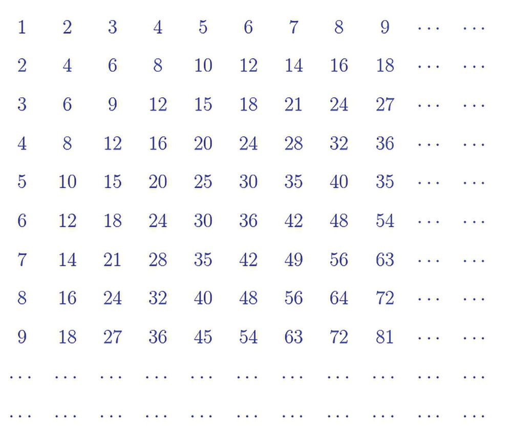
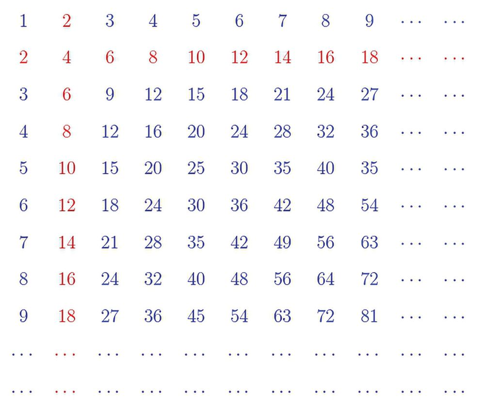
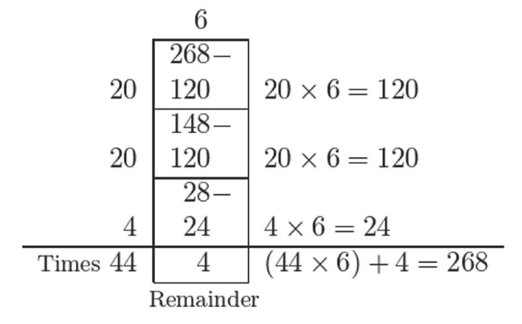
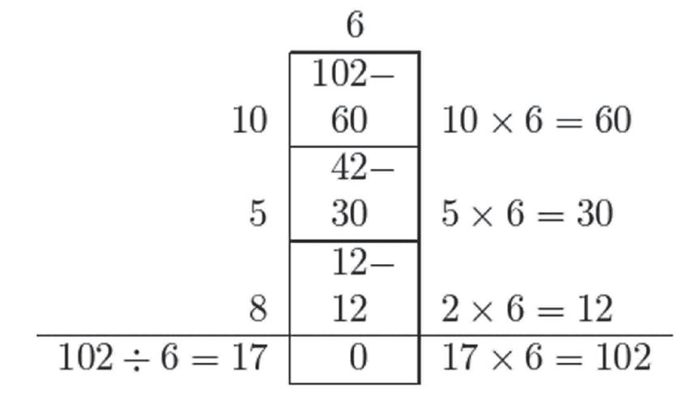
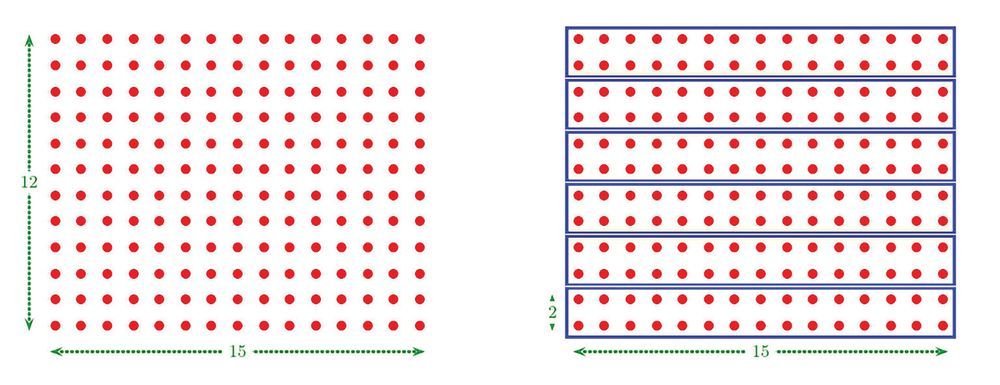

Within Numbers
11
Within Numbers Multiplication and Multiples See this table:
How are the rows and columns written? The first row and column has just the natural numbers. What about the second row and column?
125



Within Numbers
11
Within Numbers Multiplication and Multiples See this table:
How are the rows and columns written? The first row and column has just the natural numbers. What about the second row and column?
125



Standard V - Mathematics
Twice the natural numbers. In the language of mathematics, we get the numbers by multiplying the numbers 1, 2, 3, . . . by 2. We can shorten this as multiples of 2. So, what about the third row and column? In general, By the multiples of a natural number, we mean the numbers got by multiplying 1, 2, 3, . . . by that number.
Thus we can say that in our table, numbers in the 2nd row are multiples of 2. numbers in the 3rd row are multiples of 3. ......................................... What about the 1st row?
126




Within Numbers
Any natural number is a multiple of 1, isn’t it? Is 48 a multiple of 6? The 8th number in the 6th row is 48; which gives 8 × 6 = 48 How about a bigger number? For example, is 102 a multiple of 6? We can find this by extending the table. Is there any other way? The question is whether 6 multiplied by any number gives 102. To see this, we need only divide 102 by 6, right?
This shows 102 = 17 × 6 So, 102 is indeed a multiple of 6. We observe another fact from this computation. Since 102 = 6 × 17, the number 102 is also a multiple of 17. How about 268?
127


Standard V - Mathematics
This shows that 268 = (44 × 6) + 4 That is, 268 is larger than 44 × 6 and smaller than 45 × 6 (how?). So, 268 is not a multiple of 6. Thus what’s the general method of checking whether a number is a multiple of another number? If a number is divisible by another number, the first number is a multiple of the second number; if there is a remainder on division, it is not a multiple.
Recall from the lesson Number Relations that divisible by a number means division by that number leaves no remainder. Now in each pair of numbers given below, check whether the first is a multiple of the second: (i) 7, 91
(ii) 9, 127
(iii) 12, 136 (iv) 15, 225
Division and Factors We’ve seen that we can check whether one number is a multiple of another by division. For example, since 72 ÷ 4 = 18 72 is a multiple of 4. The fact that 72 is divisible by 4 can be put in another form: 4 is a factor of 72 In general By the factors of a number, we mean those numbers by which this number is divisible.
128


Within Numbers
In the lesson Division Methods, we’ve seen how the same relation between numbers can be stated either using multiplication or using division. For example Numbers 6, 54
Multiplication 54 = 6 × 9
Division 54 ÷ 6 = 9 54 ÷ 9 = 6
Now this can be stated also in terms of multiples or factors. Numbers
6, 54
Multiplication 54 = 6 ×9
Division
54 is a multiple of 6 54 ÷ 6 = 9
6 is a factor of 54
54 is a multiple 54 ÷ 9 = 6 of 9
9 is a factor of 54
Now write the relation between each pair of numbers below like this, as multiplication-multiple and division-factor. (i) 9, 72
(ii) 12, 156 (iii) 13, 169 (iv) 25, 375
Factors in Multiplication and Division Splitting a number into products of factors will make some computations easier. For example, let’s calculate 12 × 15 Writing 12 = 2 × 6 as a product of factors, 12 × 15 = 6 × 2 × 15 In this, we can mentally calculate 2 × 15 = 30; also using the fact that 6 × 3 = 18, we can do the entire multiplication in head as follows: 12 × 15 = 6 × (2 × 15) = 6 × 30 = 180
129



Standard V - Mathematics
This computation can also be described using pictures: ചിത്രരൂപത്തിലും കാണാം:
Next consider 16 × 18. If we split 16 as 2 × 2 × 2 × 2, then 18 × 16 = 18 × 2 × 2 × 2 × 2 Noting that each multiplication by 2 doubles the number, the multiplications above can be done quickly as 36, 72, 144, 288 That is, 18 × 16 = 288 See if you can mentally calculate the products below: (i) 12 × 25
(ii) 35 × 18 (iii) 125 × 8 (iv) 125 × 24
Now let’s take a look at an example of how division can be simplified using factors. 75 biscuits are to be distributed among 15 kids. If the shares are to be equal, how many should be given to each? To find this, we have to divide 75 by 15, right? Instead of directly dividing, let’s think like this: Since 15 = 3 × 5, we first split the kids into 3 groups of 5 each.
130
Seems your computations are wrong. Need more biscuits to distribute


Within Numbers
Now we need only give 75 ÷ 3 = 25 biscuits to each group. And when these are equally shared within each group, each kid will get 25 ÷ 5 = 5 biscuits. What did we do here? Instead of dividing 75 by 15, we first divided it by 3, and then divided the quotient by 5. Let’s look at another problem. 60 sweets are to be split equally into 12 packets. How many should be put in each packet? Here we have to split 60 into 12 equal parts; that is divide 60 by 12. We can write 12 = 3 × 4, as a product of factors. First let’s split 60 sweets into 3 equal parts. We can mentally calculate that each part will have 20 sweets (just by recalling 6 = 3 × 2)
60 ÷ 3 = 20 Next if we split each of these 3 parts into 4 equal parts, we will have 3 × 4 = 12 equal parts, isn’t it? And we can see that each of these parts has 20 ÷ 4 = 5 sweets. Thus each packet must have 5 sweets.
60 ÷ 12 = 5
131


Standard V - Mathematics
So to divide by 12, we can first divide it by 3, and then divide the quotient by 4 (or the other way round). As another example, let’s do 288 ÷ 16 Writing 16 = 2 × 2 × 2 × 2, we can see that we need only divide by 2 four times. If we also recall that dividing by 2 is just halving, we can compute the quotients easily as 144, 72, 36, 18 That is; 288 ÷ 16 = 18 Now try these problems: (i) 90 ÷ 15
(ii) 900 ÷ 18 (iii) 160 ÷ 32
(iv) 168 ÷ 24 (v) 210 ÷ 42
Common Factors How did you do the last problem of the previous section? We can think like this: 210 ÷ 42 42 = 2 × 21
210 ÷ 2 = 105
105 ÷ 21 21 = 3 × 7
105 ÷ 3 = 35 35 ÷ 7
35 = 7 × 5
35 ÷ 7 = 5
210 ÷ 42 = 5 What did we do here? (1) To divide 210 by 42, (i) First divide 210 by the factor 2 of 42. (ii) Since 2 is a factor of 210 also, we got the quotient 105 with no remainder.
132


Within Numbers
(2) Now remove the 2 which is a factor of both 210 and 42, and divide 105 by 21. (i) For this, first divide 105 by the factor 3 of 21. (ii) Since 3 is a factor of 105 also, we got the quotient 35 with no remainder. (3) Now remove the 3 which is a factor of both 105 and 21, and divide 35 by 7. (4) This gives quotient 5. All this can be condensed into just one sentence: Remove one by one, the numbers 2, 3, 7 which are the factors of both 210 and 42. Let’s now write the earlier problem in another way: 168 ÷ 24 24 = 2 × 12
168 ÷ 2 = 84
84 ÷ 12 12 = 3 × 4
84 ÷ 3 = 28 28 ÷ 4
28 = 4 × 7
28 ÷ 4 = 7
168 ÷ 24 = 7 What did we do in this problem also? We removed one by one, the numbers 2, 3, 4 which are the factors of both 168 and 24. Numbers which are the factors of both the numbers are called common factors of these two numbers.
So, the technique used in these examples can be stated like this:
133


Standard V - Mathematics
In dividing one number by another, common factors of both can be removed. For example, to divide 90 by 18, we note that 90 = 9 × 5 × 2
18 = 9 × 2
and then remove the common factors 9 and 2 to get the quotient as 5. Now find the quotients below by removing common factors: (i) 600 ÷ 150
(ii) 900 ÷ 180
(iv) 420 ÷ 105
134
(iii) 225 ÷ 75